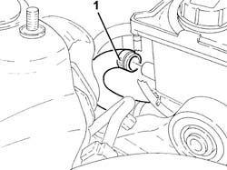
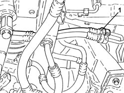
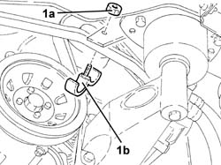
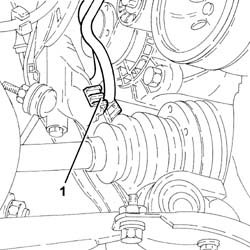
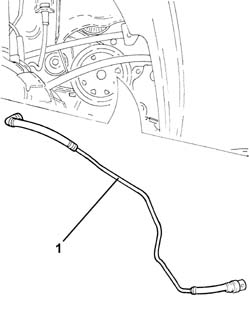
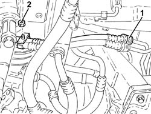
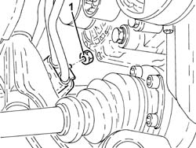
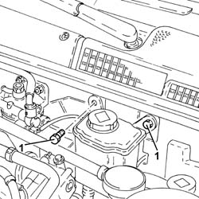
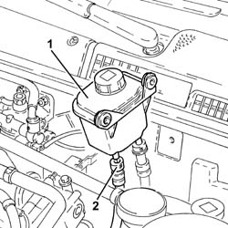
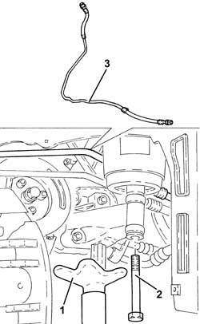

4130B54 RETURN PIPE FROM HEAT EXCHANGER PIPE TO POWER STEERING FLUID RESEVIOR R R
- Path
- Procedures > 41 STEERING UNIT > 4130 POWER STEERING > 4130B POWER STEERING HYDRAULIC SYTEM > 4130B54 RETURN PIPE FROM HEAT EXCHANGER PIPE TO POWER STEERING FLUID RESEVIOR R R
- Kind
- repair procedure (removal / refitting; the operation number is the code)
- Applies to
- engines: 1.8 T.SPARK, 2.0 JTS, 1.9 JTD 16V; all production periods
- Interactive page
- https://sloeber94.github.io/elrnDB-aGt/en/#/125001418
Applies to: engines: 1.8 T.SPARK, 2.0 JTS; all production periods
 Removing
Removing
 Refitting
RefittingPosition the vehicle on the ramp
Proceed with removal
Op. 1008C10 POWER UNIT UPPER REACTION LINK R R
Proceed with removal
Remove the power steering fluid reservoir and drain the fluid using a suitable syringe.
Op. 1008C16 BODY LINK BRACKET - R R
1. Disconnect the return pipe from the heat exchanger to the power steering fluid reservoir, reservoir side.

Applies to: engines: 1.8 T.SPARK, 2.0 JTS; all production periods
Proceed with removal
Op. 4450B04 RIGHT FRONT WHEEL R R
Proceed with removal
Proceed with removal
Op. 7055B66 ENGINE COMPARTMENT DUST SHIELD PROTECTION IN RIGHT FRONT WHEEL ARCH - R.R.
Proceed with removal
1. Disconnect the rapid attachment coupling from the return pipe from the heat exchanger to the power steering fluid reservoir, heat exchanger side.
Op. 7055B91 RIGHT FRONT WHEEL ARCH LINER - R.R.
Op. 7055B54 UNDER-ENGINE GUARD - R R

Applies to: engines: 1.8 T.SPARK, 2.0 JTS; all production periods
1. Undo the nut (1a) and remove the bracket (1b) securing the power steering pipes.

Applies to: engines: 1.8 T.SPARK, 2.0 JTS; all production periods
1. Release the power assisted steering system pipes from the fastening on the front suspension beam.

Applies to: engines: 1.8 T.SPARK, 2.0 JTS; all production periods
1. Remove the return pipe from heat exchanger to power steering fluid reservoir.

Applies to: engines: 1.8 T.SPARK, 2.0 JTS; all production periods
Refitting
RemovingRefit in its seating the return pipe from the heat exchanger to the power steering fluid reservoir.
Secure the power steering system pipes to the fastening on the front suspension beam.
Refit the power steering pipe mounting bracket in its seating and secure with the nut.
Connect the rapid attachment coupling on the return pipe from the heat exchanger to the power steering fluid reservoir, heat exchanger side.
Proceed with refitting
Op. 7055B54 UNDER-ENGINE GUARD - R R.
Proceed with refitting
Op. 7055B91 RIGHT FRONT WHEEL ARCH LINER - R.R..
Proceed with refitting
Op. 7055B66 ENGINE COMPARTMENT DUST SHIELD PROTECTION IN RIGHT FRONT WHEEL ARCH - R.R..
Proceed with refitting
Op. 4450B04 RIGHT FRONT WHEEL R R.
Connect the return pipe from the heat exchanger to the power steering fluid reservoir, reservoir side.
Proceed with refitting
Op. 1008C16 BODY LINK BRACKET - R R.
Proceed with refitting
Op. 1008C10 POWER UNIT UPPER REACTION LINK R R.
Proceed with refitting
Op. 0010T71 POWER STEERING FLUID CHECK LEVEL AND TOP UP IF NECESSARY.
Remove the car from the ramps.
Applies to: engines: 1.9 JTD 16V; all production periods
Removing
RefittingPosition the vehicle on the ramp
Proceed with removal
- 1016A10 sound-proofing cover - r + r
Proceed with removal
Proceed with removal
Op. 4450B12 FRONT OR REAR WHEELS (TWO) - R+R
Proceed with removal
Proceed with removal
Op. 7055B66 ENGINE COMPARTMENT DUST SHIELD PROTECTION IN RIGHT FRONT WHEEL ARCH - R.R.
Proceed with removal
Proceed with removal
Op. 7055B91 RIGHT FRONT WHEEL ARCH LINER - R.R.
1. Disconnect the rapid attachment coupling from the return pipe from the heat exchanger to the power steering fluid reservoir, heat exchanger side.
2. Undo the nut for the front bracket fastening the supply and return pipes to the power assisted steering system heat exchanger.
Op. 7055B54 UNDER-ENGINE GUARD - R R
Op. 1084C40 CONVOGLIATORE ARIA PER RADIATORE RAFFREDDAMENTO OLIO MOTORE - S.R.

Applies to: engines: 1.9 JTD 16V; all production periods
1. Undo the nut for the rear bracket fastening the supply and return pipes to the power assisted steering system heat exchanger.

Applies to: engines: 1.9 JTD 16V; all production periods
1. Undo the bolts securing the power steering fluid reservoir.

Applies to: engines: 1.9 JTD 16V; all production periods
1. Move the power assisted steering fluid reservoir away, placing it as illustrated in the diagram.
2. Disconnect the rapid attachment coupling from the return pipe from the heat exchanger to the power steering fluid reservoir, reservoir side.

Applies to: engines: 1.9 JTD 16V; all production periods
1. Position a hydraulic jack under the rigid power unit support, timing side.
2. Undo the bolt securing timing side rigid engine support to the flexible mounting.
Lower the power unit, as necessary, using the hydraulic jack to facilitate the removal of the pipe in question.
3. Release and remove the return pipe from the heat exchanger to the power assisted steering fluid reservoir.

Applies to: engines: 1.9 JTD 16V; all production periods
Refitting
RemovingRefit in its seating the return pipe from the heat exchanger to the power steering fluid reservoir.
Place the power unit back in its housing using the hydraulic jack.
Tighten the bolt securing timing side rigid engine support to the flexible mounting to the recommended torque.
 | Fastening | Component | Ø | Value (daNm) |
|---|---|---|---|---|
- | Bolt | ENGINE MOUNT TIMING SIDE | M12 | Flexible mounting side 79 97 |
Remove the hydraulic jack under the rigid power unit support, timing side.
Connect the rapid attachment coupling on the return pipe from the heat exchanger to the power steering fluid reservoir, reservoir side.
Refit in its seating the power steering fluid reservoir and secure it with its bolts.
Tighten the nuts for the brackets fastening the supply and return pipes to the power assisted steering system heat exchanger.
Connect the rapid attachment coupling on the return pipe from the heat exchanger to the power steering fluid reservoir, heat exchanger side.
Proceed with refitting
Op. 1084C40 CONVOGLIATORE ARIA PER RADIATORE RAFFREDDAMENTO OLIO MOTORE - S.R..
Proceed with refitting
Op. 7210E10 R.R. FRONT BUMPER.
Proceed with refitting
Op. 7055B91 RIGHT FRONT WHEEL ARCH LINER - R.R..
Proceed with refitting
Op. 7055B66 ENGINE COMPARTMENT DUST SHIELD PROTECTION IN RIGHT FRONT WHEEL ARCH - R.R..
Proceed with refitting
Op. 4450B12 FRONT OR REAR WHEELS (TWO) - R+R.
Proceed with refitting
Op. 0010T71 POWER STEERING FLUID CHECK LEVEL AND TOP UP IF NECESSARY.
Proceed with refitting
Op. 7055B54 UNDER-ENGINE GUARD - R R.
Proceed with refitting
- 1016A10 sound-proofing cover - r + r
.
Remove the car from the ramps.
Topics linked from this page (10)
- 0010T71 POWER STEERING FLUID CHECK LEVEL AND TOP UP IF NECESSARY
- 1008C10 POWER UNIT UPPER REACTION LINK R R
- 1008C16 BODY LINK BRACKET - R R
- 1084C40 CONVOGLIATORE ARIA PER RADIATORE RAFFREDDAMENTO OLIO MOTORE - S.R.
- 4450B04 RIGHT FRONT WHEEL R R
- 4450B12 FRONT OR REAR WHEELS (TWO) - R+R
- 7055B54 UNDER-ENGINE GUARD - R R
- 7055B66 ENGINE COMPARTMENT DUST SHIELD PROTECTION IN RIGHT FRONT WHEEL ARCH - R.R.
- 7055B91 RIGHT FRONT WHEEL ARCH LINER - R.R.
- 7210E10 R.R. FRONT BUMPER